Bash Terminal Basic Commands
| Command | Output |
|---|---|
| ls | List directory contents |
| echo | Prints text to the terminal window |
| touch | Creates a file |
| mkdir | Create a directory |
| pwd | Print working directory |
| cd | Change directory |
| mv | Move or rename directory |
| less | view the contents of a text file |
| cat | Read a file, create a file, and concatenate files |
| chmod | Sets the file permissions flag on a file or folder |
ROS Basics
Difficulty: Beginner
The Robot Operating System (ROS) is a set of software libraries and tools for building robot applications. From drivers to state-of-the-art algorithms, and with powerful developer tools, ROS has what you need for your next robotics project. And it’s all open source.
These tutorials are a collection of step-by-step instructions meant to steadily build skills.
The best way to approach the tutorials is to walk through them for the first time in order, as they build off of each other and are not meant to be comprehensive documentation.
Catkin Workspace
- catkin is the official build system of ROS and the successor to the original ROS build system, rosbuild.
- catkin combines CMake macros and Python scripts to provide some functionality on top of CMake’s normal workflow.
- catkin was designed to be more conventional than rosbuild, allowing for better distribution of packages, better cross-compiling support, and better portability.
src
- the
srcfolder contains the source code of catkin packages. This is where you can extract/checkout/clone source code for the packages you want to build. - Each folder within the
srcfolder contains one or more catkin packages. This folder should remain unchanged by configuring, building, or installing. - The root of the
srcfolder contains a symbolic link to catkin’s boiler-plate ‘toplevel’ CMakeLists.txt file. This file is invoked by CMake during the configuration of the catkin projects in the workspace. It can be created by callingcatkin_init_workspacein thesrcfolder directory. When we execute thecatkin_makecommand from the workspace folder, it checks inside thesrcfolder and builds each package.
build
- The
buildfolder is where CMake is invoked tobuildthe catkin packages in thesrcfolder. - CMake and catkin keep their cache information and other intermediate files here.
- The
buildfolder does not have to be contained within the workspace nor does it have to be outside of thesrcfolder, but this is recommended.
devel
- The development folder (or
develfolder) is where built targets are placed before installed. - The way targets are organized in the
develfolder is the same as their layout when they are installed. - This provides a useful testing and development environment which does not require invoking the installation step.
- The location of the
develfolder is controlled by a catkin specific CMake variable calledCATKIN_DEVEL_PREFIX, and it defaults to build/devel folder. - This is the default behavior because it might be confusing to CMake users if they invoked CMake in a
buildfolder and that modified things outside of the current directory. - It is recommended, however, to set the
develfolder directory to be a peer of thebuildfolder directory.
source ~/<workspace_name>/devel/setup.bash
Create a Catkin Workspace
- Open up the terminal
shortcut key: ctrl+alt+t. - Create the root workspace directory. You can name your directory anything we are using
workspaceas the name this time.
cd ~/
mkdir -p ~/workspace/src
cd workspace
- Run the following command:
catkin_make
- The
catkin_makecommand is a convenience tool for working with catkin workspaces. Running it the first time in your workspace, it will create aCMakeLists.txtlink in yoursrcfolder. - Additionally, if you look in your current directory you should now have a ‘build’ and ‘devel’ folder.
ls
- Now to make your workspace visible to ROS. Source the setup file in the devel directory.
source ~/workspace/devel/setup.bash
By doing this, all the packages that you create inside the src folder will be visible to ROS.
s
7. This setup.bash file of your workspace must be source everytime when you want to use ROS packages created inside this workspace.
- To make sure your workspace is properly overlayed by the setup script, make sure ROS_PACKAGE_PATH environment variable includes the directory you’re in.
echo $ROS_PACKAGE_PATH
/home/youruser/workspace/src:/opt/ros/noetic/share
ROS Package
- ROS Packages according to ROS Wiki
Software in ROS is organized in packages. A package might contain ROS nodes, a ROS-independent library, a dataset, configuration files, a third-party piece of software, or anything else that logically constitutes a useful module. The goal of these packages it to provide this useful functionality in an easy-to-consume manner so that software can be easily reused. In general, ROS packages follow a "Goldilocks" principle: enough functionality to be useful, but not too much that the package is heavyweight and difficult to use from other software.
Reference
Create a ROS Package
- This tutorial will demonstrate how to use the
catkin_create_pkgscript to create a new catkin package, and what you can do with it after it has been created.
-
First, navigate to the source space directory of the catkin workspace you’ve created.
cd ~/workspace/src -
Now, use the catkin_create_pkg script to create a new package called pkg_ros_basics which depends on std_msgs, roscpp, and rospy:
catkin_create_pkg pkg_ros_basics std_msgs rospy roscpp-
This will create a beginner_tutorials folder which contains a
package.xmland aCMakeLists.txt, which have been partially filled out with the information you gavecatkin_create_pkg. -
catkin_create_pkgrequires that you give it apackage_nameand optionally a list of dependencies on which that package depends:catkin_create_pkg <package_name> [depend1] [depend2] [depend3]
-
-
Now, you need to build the packages in the catkin workspace:
cd ~/workspace catkin_make
- Inside the package, there are
srcfolder,package.xml,CMakeLists.txt, and theincludefolders.- CMakeLists.txt: This file has all the commands to build the ROS source code inside the package and create the executable. For more information about CMakeLists visit here.
- package.xml: This is an XML file. It mainly contains the package dependencies, information, and so forth.
- src: The source code of ROS packages are kept in this folder.
ROS Master
-
The
ROS Masterprovides naming and registration services to the rest of the nodes in the ROS system. -
As you know ROS Nodes are building blocks of any ROS Application. A single ROS Application may have multiple ROS Nodes which communicate with each other.
-
The role of the ROS Master is to enable individual ROS nodes to locate one another.
-
Once these nodes have located each other they communicate with each other peer-to-peer.
-
You can say, communication is established between nodes by the ROS Master. So, without
ROS Masterrunning ROS Nodes can not communicate with each other.
Start ROS Master
To start ROS Master you just have to enter the following command in the terminal.
roscore
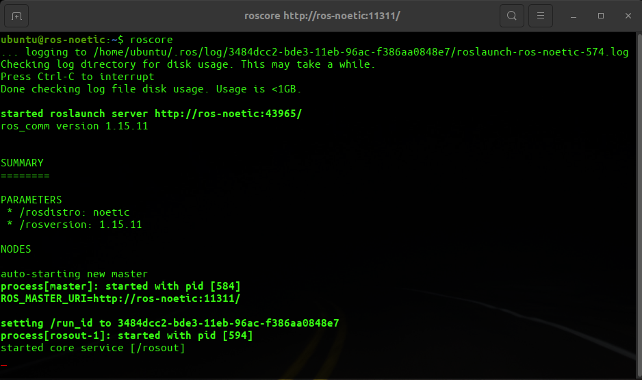
roscore is a collection of nodes and programs that are pre-requisites of a ROS-based system. You must have a roscore running in order for ROS nodes to communicate.
So roscore will start the following:
- ROS Master
- ROS Parameter Server
rosoutLogging Node
In the preceding output, you can see information about the computer, parameter which list the name (noetic) and version number of ROS distribution, and some other information.
Reading Assignment
Introducing ROS using turtlesim
- In this section, we will learn about
ROS Nodes,ROS TopicsandROS Servicesusing turtlesim examples. - Commands will be directly executed from the bash terminal.
Configuring your ROS environment
Goal: This tutorial will show you how to prepare your ROS environment.
Prerequisites
Before starting these tutorials please complete installation as described in the ROS installation instructions.
Managing Your Environment
During the installation of ROS, you will see that you are prompted to source one of several setup.*sh files, or even add this ‘sourcing’ to your shell startup script. This is required because ROS relies on the notion of combining spaces using the shell environment. This makes developing against different versions of ROS or against different sets of packages easier.
If you are ever having problems finding or using your ROS packages make sure that you have your environment properly setup. A good way to check is to ensure that environment variables like ROS_ROOT and ROS_PACKAGE_PATH are set:
$ printenv | grep ROS
ROS_VERSION=1
ROS_PYTHON_VERSION=3
ROS_PACKAGE_PATH=/home/ubuntu/workspace/src:/opt/ros/noetic/share
ROSLISP_PACKAGE_DIRECTORIES=/home/ubuntu/workspace/devel/share/common-lisp
ROS_ETC_DIR=/opt/ros/noetic/etc/ros
ROS_MASTER_URI=http://localhost:11311
ROS_ROOT=/opt/ros/noetic/share/ros
ROS_DISTRO=noetic
If they are not then you might need to ‘source’ some setup.*sh files.
$ source /opt/ros/noetic/setup.bash
NOTE: You will need to run this command on every new shell you open to have access to the ROS commands, unless you add this line to your .bashrc.
To add this line to .bashrc run this command:
echo "source /opt/ros/noetic/setup.bash" >> ~/.bashrc
To undo this (to change to another distro) in Linux and macOS, locate your system’s shell startup script and remove the appended source command.
Summary
The ROS development environment needs to be correctly configured before use. This can be done in two ways: either sourcing the setup files in every new shell you open, or adding the source command to your startup script.
If you ever face any problems locating or using packages with ROS, the first thing you should do is check your environment variables and ensure they are set to the version and distro you intended.
Introducing turtlesim and rqt
Goal: Install and use the turtlesim package and rqt tools to prepare for upcoming tutorials.
Background
Turtlesim is a lightweight simulator for learning ROS. It illustrates what ROS does at the most basic level, to give you an idea of what you will do with a real robot or robot simulation later on.
rqt is a GUI tool for ROS. Everything done in rqt can be done on the command line, but it provides an easier, more user-friendly way to manipulate ROS elements.
This tutorial touches on core ROS concepts, like the separation of nodes, topics, and services. All of these concepts will be elaborated on in later tutorials; for now, you will simply set up the tools and get a feel for them.
Prerequisites
The previous tutorial, Configuring your ROS environment, will show you how to set up your environment.
Tasks
1 Start rosmaster
roscore
2 Start turtlesim
To start turtlesim, enter the following command in your terminal:
rosrun turtlesim turtlesim_node
The simulator window should appear, with a random turtle in the center.
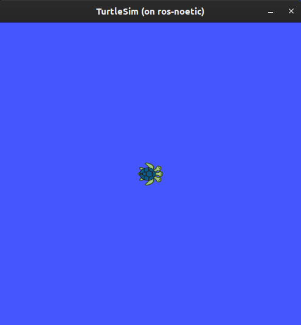
In the terminal under the command, you will see messages from the node:
[ INFO] [1622133713.331795042]: Starting turtlesim with node name /turtlesim
[ INFO] [1622133713.335199049]: Spawning turtle [turtle1] at x=[5.544445], y=[5.544445], theta=[0.000000]
Here you can see your default turtle’s name is turtle1, and the default coordinates where it spawns.
3 Use turtlesim
Open a new terminal and source ROS again.
Now you will run a new node to control the turtle in the first node:
rosrun turtlesim turtle_teleop_key
At this point you should have four windows open: a terminal running roscore, a terminal running turtlesim_node, a terminal running turtle_teleop_key and the turtlesim window. Arrange these windows so that you can see the turtlesim window, but also have the terminal running turtle_teleop_key active so that you can control the turtle in turtlesim.
Use the arrow keys on your keyboard to control the turtle. It will move around the screen, using its attached “pen” to draw the path it followed so far.
Note: Pressing an arrow key will only cause the turtle to move a short distance and then stop. This is because, realistically, you wouldn’t want a robot to continue carrying on an instruction if, for example, the operator lost the connection to the robot.
You can see the nodes and their associated services, topics using the list command:
rosnode list
rostopic list
rosservice list
You will learn more about these concepts in the coming tutorials. Since the goal of this tutorial is only to get a general overview of turtlesim, we will use rqt (a graphical user interface for ROS) to look at services a little closer.
4 Run rqt
Open a new terminal to run rqt:
rqt
After running rqt the first time, the window will be blank. No worries; just select Plugins > Services > Service Caller from the menu bar at the top.
Note: It may take some time for rqt to locate all the plugins itself. If you click on Plugins, but don’t see Services or any other options, you should close rqt, enter the command
rqt --force-discoverin your terminal.
Use the refresh button to the left of the Service dropdown list to ensure all the services of your turtlesim node are available.
Click on the Service dropdown list to see turtlesim’s services, and select the /spawn service.
4.1 Try the spawn service
Let’s use rqt to call the /spawn service. You can guess from its name that /spawn will create another turtle in the turtlesim window.
Give the new turtle a unique name, like turtle2 by double-clicking between the empty single quotes in the Expression column. You can see that this expression corresponds to the name value, and is of type string.
Enter new coordinates for the turtle to spawn at, like x = 1.0 and y = 1.0.
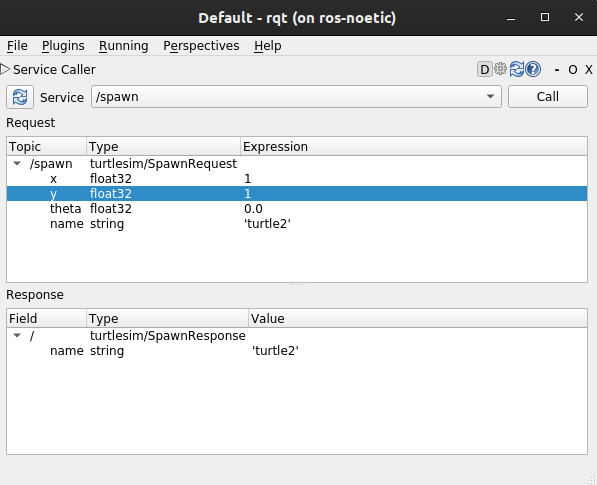
Note: If you try to spawn a new turtle with the same name as an existing turtle, like your default
turtle1, you will get an error message in the terminal runningturtlesim_node:
[ERROR] [1622134917.034342076]: A turtled named [turtle1] already exists
To spawn turtle2, you have to call the service by clicking the Call button on the upper right side of the rqt window.
You will see a new turtle (again with a random design) spawn at the coordinates you input for x and y.
If you refresh the service list in rqt, you will also see that now there are services related to the new turtle, /turtle2/…, in addition to /turtle1/….
4.2 Try the set_pen service
Now let’s give turtle1 a unique pen using the /set_pen service:
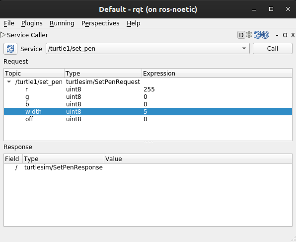
The values for r, g and b, between 0 and 255, will set the color of the pen turtle1 draws with, and width sets the thickness of the line.
To have turtle1 draw with a distinct red line, change the value of r to 255, and the value of width to 5. Don’t forget to call the service after updating the values.
If you return to the terminal where turtle_teleop_node is running and press the arrow keys, you will see turtle1’s pen has changed.

You’ve probably noticed that there’s no way to move turtle2. You can accomplish this by remapping turtle1’s cmd_vel topic onto turtle2.
5 Remapping
In a new terminal, source ROS, and run:
rosrun turtlesim turtlesim_node __name:=turtle2 --ros-args --remap turtle1/cmd_vel:=turtle2/cmd_vel
Note: Notice that __name:=turtle2 starts the node with name
turtle2. This avoids conflicts if we start two nodes with same name.
Now you can move turtle2 when this terminal is active, and turtle1 when the other terminal running the turtle_teleop_key is active.
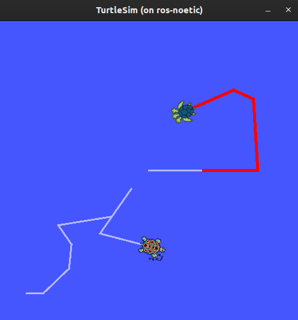
Close turtlesim
To stop the simulation, you can simply close the terminal windows where you ran turtlesim_node and turtle_teleop_key. If you want to keep those terminals open, but end the simulation, you can enter Ctrl + C in the turtlesim_node terminal, and q in the teleop terminal.
Summary
Using turtlesim and rqt is a great way to learn the core concepts of ROS.
Understanding ROS nodes
Goal: Learn about the function of nodes in ROS, and the tools to interact with them.
Background
1 The ROS graph
Over the next few tutorials, you will learn about a series of core ROS concepts that make up what is referred to as the “ROS graph”.
The ROS graph is a network of ROS elements processing data together at one time. It encompasses all executables and the connections between them if you were to map them all out and visualize them.
2 Nodes in ROS
Each node in ROS should be responsible for a single, module purpose (e.g. one node for controlling wheel motors, one node for controlling a laser range-finder, etc). Each node can send and receive data to other nodes via topics, services, actions, or parameters.

A full robotic system is comprised of many nodes working in concert.
Prerequisites
As always, don’t forget to source ROS in every new terminal you open. Also, run roscore in a
separate terminal.
Tasks
1 rosrun
The command rosrun launches an executable from a package.
rosrun <package_name> <executable_name>
To run turtlesim, open a new terminal, and enter the following command:
rosrun turtlesim turtlesim_node
Here, the package name is turtlesim and the executable name is turtlesim_node.
We still don’t know the node name, however. You can find node names by using rosnode list
2 rosnode list
rosnode list will show you the names of all running nodes. This is especially useful when you want to interact with a node, or when you have a system running many nodes and need to keep track of them.
Open a new terminal while turtlesim is still running in the other one, and enter the following command:
rosnode list
The terminal will return the node name:
/rosout
/turtlesim
Open another new terminal and start the teleop node with the command:
rosrun turtlesim turtle_teleop_key
Here, we are searching the turtlesim package again, this time for the executable named turtle_teleop_key.
Return to the terminal where you ran rosnode list and run it again. You will now see the names of two active nodes:
/rosout
/teleop_turtle
/turtlesim
2.1 Remapping
Remapping allows you to reassign default node properties, like node name, topic names, service names, etc., to custom values. In the last tutorial, you used remapping on turtle_teleop_key to change the default turtle being controlled.
Now, lets reassign the name of our /turtlesim node. In a new terminal, run the following command:
rosrun turtlesim turtlesim_node __name:=my_turtle
Since you’re calling rosrun on turtlesim again, another turtlesim window will open. However, now if you return to the terminal where you ran rosnode list, and run it again, you will see three node names:
/my_turtle
/rosout
/teleop_turtle
/turtlesim
3 rosnode info
Now that you know the names of your nodes, you can access more information about them with:
rosnode info <node_name>
To examine your latest node, my_turtle, run the following command:
rosnode info /my_turtle
rosnode info returns a list of subscribers, publishers, services, and actions (the ROS graph connections) that interact with that node. The output should look like this:
Node [/my_turtle]
Publications:
* /rosout [rosgraph_msgs/Log]
* /turtle1/color_sensor [turtlesim/Color]
* /turtle1/pose [turtlesim/Pose]
Subscriptions:
* /turtle1/cmd_vel [geometry_msgs/Twist]
Services:
* /clear
* /kill
* /my_turtle/get_loggers
* /my_turtle/set_logger_level
* /reset
* /spawn
* /turtle1/set_pen
* /turtle1/teleport_absolute
* /turtle1/teleport_relative
contacting node http://ros-noetic:44953/ ...
Pid: 878
Connections:
* topic: /rosout
* to: /rosout
* direction: outbound (40097 - 10.104.247.68:60584) [18]
* transport: TCPROS
* topic: /turtle1/cmd_vel
* to: /teleop_turtle (http://ros-noetic:44321/)
* direction: inbound (58058 - ros-noetic:47853) [17]
* transport: TCPROS
Now try running the same command on the /teleop_turtle node, and see how its connections differ from my_turtle.
You will learn more about ROS graph connection concepts in the upcoming tutorials.
Summary
A node is a fundamental ROS element that serves a single, modular purpose in a robotics system.
In this tutorial, you utilized nodes created from the turtlesim package by running the executables turtlesim_node and turtle_teleop_key.
You learned how to use rosnode list to discover active node names and rosnode info to introspect on a single node. These tools are vital to understanding the flow of data in a complex, real-world robot system.
Understanding ROS topics
Goal: Use rqt_graph and command line tools to introspect ROS topics.
Background
ROS breaks complex systems down into many modular nodes. Topics are a vital element of the ROS graph that act as a bus for nodes to exchange messages.

A node may publish data to any number of topics and simultaneously have subscriptions to any number of topics.

Topics are one of the important ways that data moves between nodes, and therefore between different parts of the system.
Prerequisites
As always, don’t forget to source ROS 2 in every new terminal you open. Run roscore in a separate terminal.
Tasks
1 Setup
By now you should be comfortable starting up turtlesim.
Open a new terminal and run:
rosrun turtlesim turtlesim_node
Open another terminal and run:
rosrun turtlesim turtle_teleop_key
Recall from the [previous tutorial] that the names of these nodes are /turtlesim and /teleop_turtle by default.
2 rqt_graph
Throughout this tutorial, we will use rqt_graph to visualize the changing nodes and topics, as well as the connections between them.
To run rqt_graph, open a new terminal and enter the command:
rqt_graph
You can also open rqt_graph by opening rqt and selecting Plugins > Introspection > Nodes Graph.
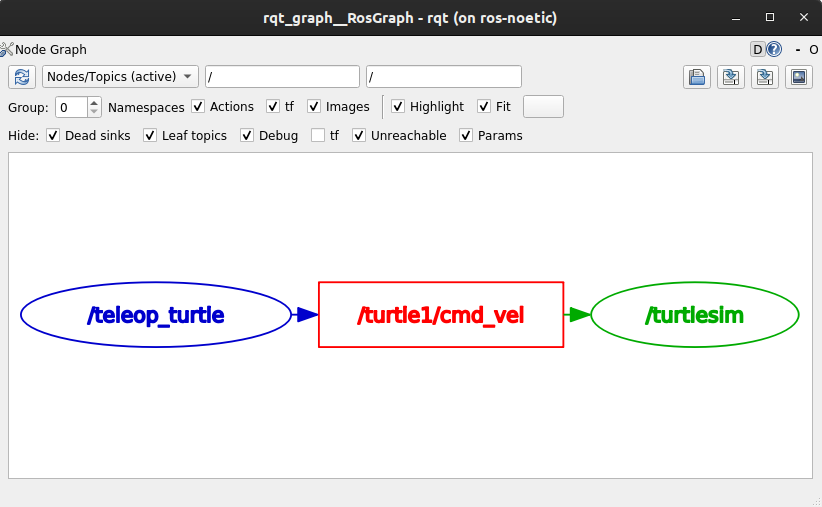
You should see the above nodes and topic. If you hover your mouse over the topic in the center, you’ll see the color highlighting like in the image above.
The graph is depicting how the /turtlesim node and the /teleop_turtle node are communicating with each other over a topic. The /teleop_turtle node is publishing data (the keystrokes you enter to move the turtle around) to the /turtle1/cmd_vel topic, and the /turtlesim node is subscribed to that topic to receive the data.
The highlighting feature of rqt_graph is very helpful when examining more complex systems with many nodes and topics connected in many different ways.
rqt_graph is a graphical introspection tool. Now we’ll look at some command line tools for introspecting topics.
rostopic list
Running the rostopic list command in a new terminal will return a list of all the topics currently active in the system:
/rosout
/rosout_agg
/statistics
/turtle1/cmd_vel
/turtle1/color_sensor
/turtle1/pose
Topics have names and types. These attributes, particularly the type, are how nodes know they’re talking about the same information as it moves over topics. To show the topic type run this command:
rostopic type /turtle1/cmd_vel
geometry_msgs/Twist
If you’re wondering where all these topics are in rqt_graph, you can uncheck all the boxes under Hide:
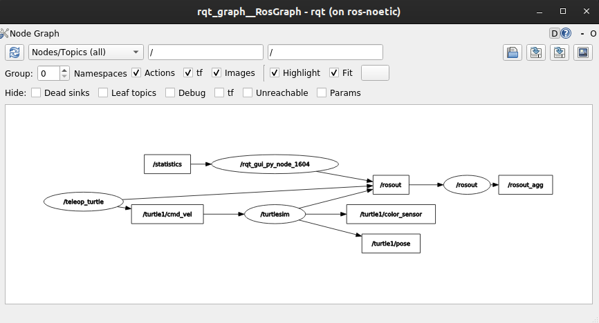
For now, though, leave those options checked to avoid confusion.
4 rostopic echo
To see the data being published on a topic, use:
rostopic echo <topic_name>
Since we know that /teleop_turtle publishes data to /turtlesim over the /turtle1/cmd_vel topic, let’s use echo to introspect on that topic:
rostopic echo /turtle1/cmd_vel
At first, this command won’t return any data. That’s because it’s waiting for /teleop_turtle to publish something.
Return to the terminal where turtle_teleop_key is running and use the arrows to move the turtle around. Watch the terminal where your echo is running at the same time, and you’ll see position data being published for every movement you make:
linear:
x: 2.0
y: 0.0
z: 0.0
angular:
x: 0.0
y: 0.0
z: 0.0
---
Now return to rqt_graph and uncheck the Debug box.
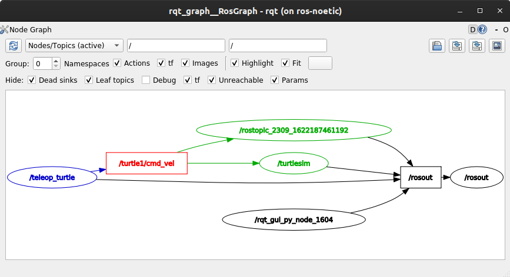
/rostopic_2309_1622187461192 is the node created by the echo we just ran (the number will change). Now you can see that the publisher is publishing data over the cmd_vel topic, and two subscribers are subscribed.
5 rostopic info
Topics don’t have to only be point-to-point communication; it can be one-to-many, many-to-one, or many-to-many.
Another way to look at this is running:
rostopic info /turtle1/cmd_vel
Which will return:
Type: geometry_msgs/Twist
Publishers:
* /teleop_turtle (http://ros-noetic:44037/)
Subscribers:
* /turtlesim (http://ros-noetic:44297/)
* /rostopic_2309_1622187461192 (http://ros-noetic:45255/)
6 rosmsg show
Nodes send data over topics using messages. Publishers and subscribers must send and receive the same type of message to communicate.
The topic types we saw earlier after running rostopic type <topic-name> let us know what type of messages each topic can send. Recall that the cmd_vel topic has the type:
geometry_msgs/Twist
This means that in the package geometry_msgs there is a message called Twist.
Now we can run `rosmsg show
rosmsg show geometry_msgs/Twist
geometry_msgs/Vector3 linear
float64 x
float64 y
float64 z
geometry_msgs/Vector3 angular
float64 x
float64 y
float64 z
This tells you that the /turtlesim node is expecting a message with two vectors, linear and angular, of three elements each. If you recall the data we saw /teleop_turtle passing to /turtlesim with the echo command, it’s in the same structure:
linear:
x: 2.0
y: 0.0
z: 0.0
angular:
x: 0.0
y: 0.0
z: 0.0
---
rostopic pub
Now that you have the message structure, you can publish data onto a topic directly from the command line using:
rostopic pub <topic_name> <msg_type> '<args>'
The '<args>' argument is the actual data you’ll pass to the topic, in the structure you just discovered in the previous section.
It’s important to note that this argument needs to be input in YAML syntax. Input the full command like so:
rostopic pub -1 /turtle1/cmd_vel geometry_msgs/Twist "{linear: {x: 2.0, y: 0.0, z: 0.0}, angular: {x: 0.0, y: 0.0, z: 1.8}}"
-1 is an optional argument meaning “publish one message then exit”.
You will receive the following message in the terminal:
publishing and latching message for 3.0 seconds
And you will see your turtle move like so:

The turtle (and commonly the real robots which it is meant to emulate) require a steady stream of commands to operate continuously. So, to get the turtle to keep moving, you can run:
rostopic pub -r 1 /turtle1/cmd_vel geometry_msgs/Twist "{linear: {x: 2.0, y: 0.0, z: 0.0}, angular: {x: 0.0, y: 0.0, z: 1.8}}"
The difference here is the removal of the -1 option and the addition of the --rate 1 option, which tells rostopic pub to publish the command in a steady stream at 1 Hz.
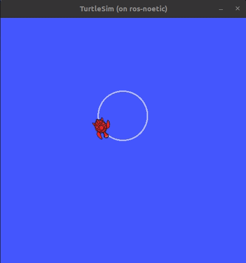
You can refresh rqt_graph to see what’s happening graphically. You will see the rostopic pub ... node (/rostopic_3050_1622189437717) is publishing over the /turtle1/cmd_vel topic, and is being received by both the rostopic echo ... node (/rostopic_2309_1622187461192) and the /turtlesim node now.
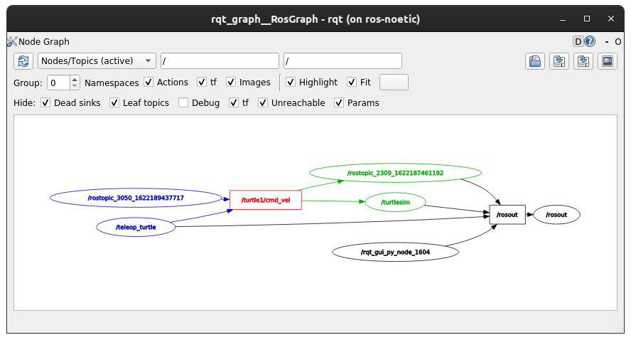
Finally, you can run echo on the pose topic and recheck rqt_graph:
rostopic echo /turtle1/pose

In this case, /turtlesim is now publishing to the pose topic, and a new echo node is subscribed.
8 rostopic hz
For one last introspection on this process, you can report the rate at which data is published using:
rostopic hz /turtle1/pose
It will return data on the rate at which the /turtlesim node is publishing data to the pose topic.
average rate: 62.527
min: 0.015s max: 0.017s std dev: 0.00041s window: 62
Recall that you set the rate of turtle1/cmd_vel to publish at a steady 1 Hz using rostopic pub -r 1. If you run the above command with turtle1/cmd_vel instead of turtle1/pose, you will see an average reflecting that rate.
9 Clean up
At this point you’ll have a lot of nodes running. Don’t forget to stop them, either by closing the terminal windows or entering Ctrl+C in each terminal.
Summary
Nodes publish information over topics, which allows any number of other nodes to subscribe to and access that information. In this tutorial you examined the connections between several nodes over topics using rqt_graph and command line tools. You should now have a good idea of how data moves around a ROS system.
Understanding ROS Services
Goal: Learn about services in ROS using command line tools.
Background
Services are another method of communication for nodes in the ROS graph. Services are based on a call-and-response model, versus topics’ publisher-subscriber model. While topics allow nodes to subscribe to data streams and get continual updates, services only provide data when they are specifically called by a client.


Prerequisites
As always, don’t forget to source ROS in every new terminal you open.
Run roscore in a separate terminal.
Tasks
1 Setup
Start up the two turtlesim nodes, /turtlesim and /teleop_turtle.
Open a new terminal and run:
rosrun turtlesim turtlesim_node
Open another terminal and run:
rosrun turtlesim turtle_teleop_key
2 rosservice list
Running the rosservice list command in a new terminal will return a list of all the services currently active in the system:
/clear
/kill
/reset
/rosout/get_loggers
/rosout/set_logger_level
/spawn
/teleop_turtle/get_loggers
/teleop_turtle/set_logger_level
/turtle1/set_pen
/turtle1/teleport_absolute
/turtle1/teleport_relative
/turtlesim/get_loggers
/turtlesim/set_logger_level
For now, let’s focus on the turtlesim-specific services, /clear, /kill, /reset, /spawn, /turtle1/set_pen, /turtle1/teleport_absolute, and /turtle1/teleport_relative. You may recall interacting with some of these services using rqt in the `[“Introducing turtlesim and rqt” tutorial.
3 rosservice type
Services have types that describe how the request and response data of a service is structured. Service types are defined similarly to topic types, except service types have two parts: one message for the request and another for the response.
To find out the type of a service, use the command:
rosservice type <service_name>
Let’s take a look at turtlesim’s /clear service. In a new terminal, enter the command:
rosservice type /clear
Which should return:
std_srvs/Empty
The Empty type means the service call sends no data when making a request and receives no data when receiving a response.
4 rosservice find
If you want to find all the services of a specific type, you can use the command:
rosservice find <type_name>
For example, you can find all the Empty typed services like this:
rosservice find std_srvs/Empty
Which will return:
/clear
/reset
5 rossrv show
You can call services from the command line, but first you need to know the structure of the input arguments.
rossrv show <type_name>
To run this command on the /clear service’s type, Empty:
rossrv show std_srvs/Empty
Which will return:
---
The --- separates the request structure (above) from the response structure (below). But, as you learned earlier, the Empty type doesn’t send or receive any data. So, naturally, its structure is blank.
Let’s introspect a service with a type that sends and receives data, like /spawn. From the results of rosservice list and rosservice type, we know /spawn’s type is turtlesim/Spawn.
To see the arguments in a /spawn call-and-request, run the command:
rossrv show turtlesim/Spawn
Which will return:
float32 x
float32 y
float32 theta
string name
---
string name
The information above the --- line tells us the arguments needed to call /spawn. x, y and theta determine the location of the spawned turtle, and name is clearly optional.
The information below the line isn’t something you need to know in this case, but it can help you understand the data type of the response you get from the call.
6 rosservice call
Now that you know what a service type is, how to find a service’s type, and how to find the structure of that type’s arguments, you can call a service using:
rosservice call <service_name> <arguments>
The <arguments> part is optional. For example, you know that Empty typed services don’t have any arguments:
rosservice call /clear
This command will clear the turtlesim window of any lines your turtle has drawn.

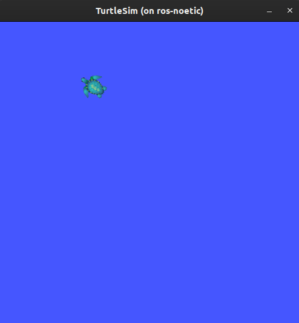
Now let’s spawn a new turtle by calling /spawn and inputting arguments. Input <arguments> in a service call from the command-line need to be in YAML syntax.
Enter the command:
rosservice call /spawn "{x: 2, y: 2, theta: 0.2, name: ''}"
You will get this output on terminal:
name: "turtle2"
Your turtlesim window will update with the newly spawned turtle right away:
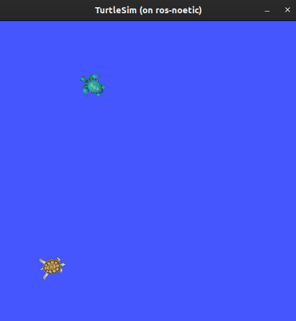
Summary
Nodes can communicate using services in ROS. Unlike a topic - a one way communication pattern where a node publishes information that can be consumed by one or more subscribers - a service is a request/response pattern where a client makes a request to a node providing the service and the service processes the request and generates a reponse.
You generally don’t want to use a service for continuous calls; topics or even actions would be better suited.
In this tutorial you used command line tools to identify, elaborate on, and call services.
ROS Parameter Server
-
You can think Parameter Server as a space where all the necessary data that needs to be shared among various ROS Nodes is stored.
-
Parameter Server runs inside ROS Master.
-
ROS Nodes can view and even modify data stored in the Parameter Server.
-
Typically Parameter Server is used to store configuration parameters.
Reading Assignment
Load Parameters using YAML file
In this section we will learn how to load your own parameters in ROS Parameter Server using a YAML File.
Steps
-
Navigate to
pkg_ros_basics.cd ~/workspace/src/pkg_ros_basicsOR
roscd pkg_ros_basicsNOTE:
roscdwill work only if you have sourcedsetup.bashof your catkin workspace. -
Create a
configfolder for your Python scripts and navigate into the folder.mkdir config cd config -
Create a configuration YAML file called
config_my.yaml.touch config_my.yaml -
Open the script in any text-editor and start editing.
gedit config_my.yaml -
Now fill your config file.
# Comment: config_my.yaml Configuration details: name: first: "Heisenberg" # First Name last: "White" # Last Name contact: address: "ABQ Street, ABQ" # Address phone: 77777 # Contact-
ROS Build system will create a Python Dictionary called
details. -
This dictionary will have two keys,
- Dictionary
name - Dictionary
contact
- Dictionary
-
In your ROS Node you can use
rospyto get parameters stored in thisconfig_mydictionary.param_config_my = rospy.get_param('details') first_name = param_config_my['name']['first'] phone = param_config_my['contact']['phone']
-
-
Now if you want to load the parameters defined in the YAML file you have to first start the ROS Parameter Server.
Open up a new terminal and enter the following.
roscore -
Now load your parameters.
rosparam load config_my.yaml -
Now get the list of parameters loaded in your ROS Parameter Server.
rosparam listOutput:
/details/contact/address /details/contact/phone /details/name/first /details/name/last /rosdistro /roslaunch/uris/host_ros_noetic__35261 /rosversion /run_idHere you can see the first four parameters are loaded from our
config_my.yamlfile. -
Now to view the content of any parameter do the following.
rosparam get /details/contact/phoneOutput:
77777This is the value which we defined in the
config_my.yamlfile.
Example #1: ROS Node to Get and Set Parameters
Aim
To write a ROS Node to read config_my.yaml file loaded in ROS Parameter Server (done here), print it on the console and modify the phone number.
Code
node_param_get_set.py
#!/usr/bin/env python3
import rospy
def main():
# 1. Make the script a ROS Node.
rospy.init_node('node_param_get_set', anonymous=True)
# 2. Read from Parameter Server
rospy.loginfo("Reading from Parameter Server.")
param_config_my = rospy.get_param('details') # Get all the parameters inside 'details'
# Store the parameters in variables
first_name = param_config_my['name']['first']
last_name = param_config_my['name']['last']
address = param_config_my['contact']['address']
phone = param_config_my['contact']['phone']
# Print the parameters
rospy.loginfo(">> First Name: {}".format(first_name))
rospy.loginfo(">> Last Name: {}".format(last_name))
rospy.loginfo(">> Address: {}".format(address))
rospy.loginfo(">> Phone: {}".format(phone))
# 3. Modify the Phone Number
rospy.set_param('/details/contact/phone', 55555) # Modify only Phone Number in Parameter Server
new_phone = rospy.get_param('/details/contact/phone') # Get only Phone Number from Parameter Server
rospy.loginfo(">> New Phone: {}".format(new_phone)) # Print the new Phone Number
if __name__ == '__main__':
try:
main()
except rospy.ROSInterruptException:
pass
NOTE: Make sure you make the
pkg_ros_basics node_param_get_set.pyscript executable.
Output:
rosrun pkg_ros_basics node_param_get_set.py

- The code is self-explanatory.
- If you are not able to understand the code feel free to seek help from us.
Create a ROS Node
In this section we will learn how to create a ROS Node inside pkg_ros_basics ROS Package which we created in the previous section.
-
Navigate to
pkg_ros_basics.cd ~/catkin_ws/src/pkg_ros_basicsOR
roscd pkg_ros_basicsNOTE:
roscdwill work only if you have sourcedsetup.bashof your catkin workspace. -
Create a
scriptsfolder for your Python scripts and navigate into the folder.mkdir scripts cd scripts -
Create a Python script called
node_hello_ros.py.touch node_hello_ros.py -
Open the script in any text-editor and start editing.
gedit node_hello_ros.py -
First line of all your Python ROS scripts should be the following shebang
#!/usr/bin/env python3 -
Now write a ROS Node to print
Hello World!on the console.#!/usr/bin/env python3 import rospy def main(): # 1. Make the script a ROS Node. rospy.init_node('node_hello_ros', anonymous=True) # 2. Print info on console. rospy.loginfo("Hello World!") # 3. Keep the node alive till it is killed by the user. rospy.spin() if __name__ == '__main__': try: main() except rospy.ROSInterruptException: pass -
Now you have to make this script an executable.
sudo chmod +x node_hello_ros.py -
Now in order to run your ROS Node,
-
Open up a terminal and run ROS Master.
roscore -
Once the roscore is up running, open a new termminal and run the ROS Node.
rosrun pkg_ros_basics node_hello_ros.pyNOTE: This command will work only if you have sourced
setup.bashof your catkin workspace either manually or using.bashrc.
-
-
You should get some output like this,
[INFO] [1601277063.968749]: Hello World!
ROS Launch Files
-
In the previous sections you must have noticed that we need to use
roscorecommand to start ROS Master and Parameter Server,rosruncommand to run a ROS Node,rosparam loadcommand to load parameters etc. -
This is a tedious process to manually run nodes and load parameters.
-
Launch files provides the capability to do all these stuff using a single command.
-
The idea is to mention all the nodes that you want to run, all the config file that you want to load etc. in a single file which you can run using
roslaunchcommand.
Reading Assignment
Create a ROS Launch File
roslaunch Command
-
roslaunchis a tool for easily launching multiple ROS nodes locally and remotely via SSH. -
It includes options to automatically respawn processes that have already died.
roslaunchtakes in one or more XML configuration files (with the .launch extension) that specify the parameters to set and nodes to launch. -
Usage:
roslaunch <package> file.launch<package>is nothing but the package name which you have created usingcatkin_create_pkgcommand or used any other package.
Steps to create a launch file
-
After creating a package, create a folder in the package names as a
launchfolder to store all the launch files in that folder.cd ~/catkin_ws/src/<package> mkdir launch -
Here we can create launch files by running this command by going into the
launchdirectory, we can keep any name for the launch file,cd launch touch filename.launchNow you can edit your launch file by adding different nodes that you have to run simultaneously.
Steps to add a ROS node in the launch file
-
Launch files always starts with
<launch>and end with
</launch> -
Now to add any executable file which we have seen in the rosrun_command section, we have to add this line,
<node pkg="name_of_package" type="name_of_executable.py" name="name_of_executable" output="screen"/>pkgis the package name which you have createdtypeis the name of executable filenameis the name of the node which is created in that executableoutputmeans it will print the data given to the roslog command
Steps to load Config YAML file in ROS Parameter Server
- You can use
rosparamtag to load the YAML file.<rosparam file ="$(find name_of_package)/config/config.yaml" command="load"/>name_of_packageis the name of your ROS package.config.yamlis the name of your configuration file.
Steps to add a Shell Script in the launch file
-
You can use
nodetag to run any shell script using launch file<node pkg="name_of_package" type="shell_script.sh" name="shell_script" output="screen"> <param name="cmd" value="$(find name_of_package)/launch/shell_script.sh"/> </node>name_of_packageis the name of your ROS package.shell_script.shis the name of your configuration file./launch/shell_script.shis the location of the shell script inside your ROS Package folder.
Example #1: Launch two ROS Nodes
Aim
- To launch
talkerandlistenernode present inrospy_tutorialspackage. - For this create a
chatter.launchfile and save it in thelaunchfolder insidepkg_ros_basicspackage.
NOTE: To install
rospy_tutorialspackage in your system you can runsudo apt-get install ros-noetic-ros-tutorialsthis command.
Once installed, you can use listener python script and talker executable written in C++ present in rospy_tutorials package.
Code
chatter.launch
<launch>
<node name="talker" pkg="rospy_tutorials" type="talker" output="screen"/>
<node name="listener" pkg="rospy_tutorials" type="listener.py" output="screen"/>
</launch>
- Here first
talker.cppfile (for cpp file we dont need to add .cpp extension) has been included with the node name as talker and also set output as screen so you can see the output from talker node. - Next we have added
listener.pywhich has node name as listener and here also we have set output as screen.
Run Command
Now run these command to run the launch file,
roslaunch pkg_ros_basics chatter.launch
Output
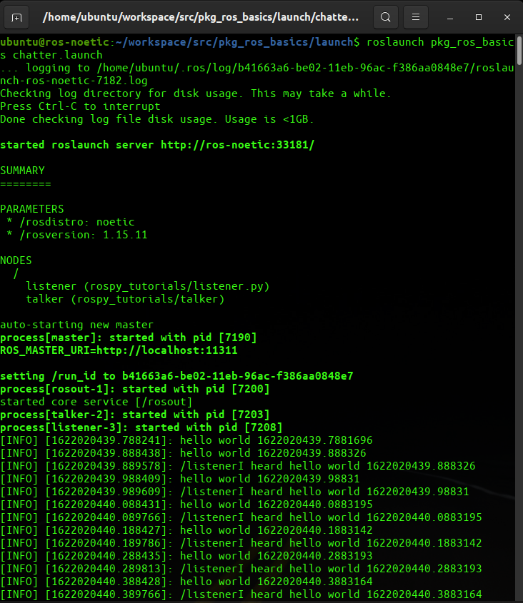
Example #2: Launch Turtle in Forest
Aim
-
To write a launch file to run
turtlesim_nodenode andturtle_teleop_keynode present inturtlesimpackage. -
While launching the
turtlesim_nodemake sure to change the background colour of the simulator from blue to forest green. -
Name the launch file
turtlesim.launchand save it inlaunchfolder insidepkg_ros_basicspackage.
Code
turtlesim.launch
<launch>
<node pkg="turtlesim" type="turtlesim_node" name="node_turtlesim_node">
<param name="/background_r" value="34" />
<param name="/background_g" value="139" />
<param name="/background_b" value="34" />
</node>
<node pkg="turtlesim" type="turtle_teleop_key" name="node_turtle_teleop_key" />
</launch>
Run Command
roslaunch pkg_ros_basics turtlesim.launch
Output
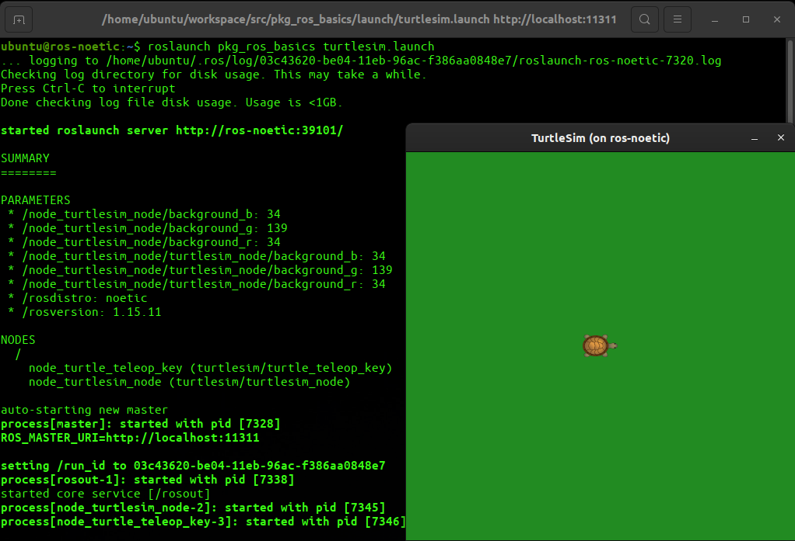
- The code is self-explanatory. - If you are not able to understand the code feel free to seek help from us.
ROS with Gazebo
Difficulty: Intermediate
This page is just to quick overview of the simulation and visualization tools in ROS.
Note: ROS and Gazebo together are a great combination to simulate how your algoirthm would work in real time scenarios.
Gazebo Simulator
-
Robot simulation is an essential tool in every roboticist’s toolbox.
-
A robust physics engine, high-quality graphics, and convenient programmatic and graphical interfaces, makes Gazebo a top Choice for 3D Simulator.
.world File: The file used to describe a collection of objects (such as buildings, tables, and lights), and global parameters including the sky, ambient light, and physics properties.
Reference
RViz
-
Visualizing sensor information is an important part in developing and debugging controllers.
-
Rviz is a powerful 3D visualization tool in ROS that will hep you do exactly that.
-
It allows the user to view the simulated robot model, log sensor information from the robot’s sensors, and replay the logged sensor information.
Reference
URDF
-
The Unified Robot Description Format (URDF) contains a number of XML specifications for robot models, sensors, scenes, etc.
-
It describes the position of all the joints, sensors, type of joints, structure of the robot base, arm etc.
Reference
XACRO
- Xacro (XML Macros) Xacro is an XML macro language.
- With xacro, you can construct shorter and more readable XML files by using macros that expand to larger XML expressions.
- Xacro is useful when the structure of the robot is complex so instead of describing the whole structure in an urdf we can divide the structure in small parts and call those macro files in the main xacro file.
- Xacros also make it easier to define common structures. For example, let’s say the robot has 2 wheels, we just need to make macros of a cylindrical structure(wheels), call it in the main xacro file and then define 2 different joints using the same structure but giving different joint location.
Reference
Gazebo Plugins
- A Gazebo plugin needs to be added to your URDF that actually parses the transmission tags and loads the appropriate hardware interfaces and controller manager.
- Plugins basically replicate exact architecture of the sensors in use or the control system used to control the movement of the robot.
What are Transmission Tags?
- Transmission tags are used to link actuators to joints.
- If the transmission tags the joints won’t move in Gazebo and they will be considered as stationary objects.
- We need to define transmission for every dynamic(moving) joint.
Reference
Gazebo Simulator
Gazebo is a 3D dynamic simulator with the ability to accurately and efficiently simulate populations of robots in complex indoor and outdoor environments. While similar to game engines, Gazebo offers physics simulation at a much higher degree of fidelity, a suite of sensors, and interfaces for both users and programs.
Features
-
multiple physics engines,
-
a rich library of robot models and environments,
-
a wide variety of sensors,
-
convenient programmatic and graphical interfaces
Understanding the GUI
To get a brief overview of the GUI of gazebo, open this link.
Adding models to Simulator
-
Let’s first open a gazebo simulator environment.
roslaunch gazebo_ros empty_world.launch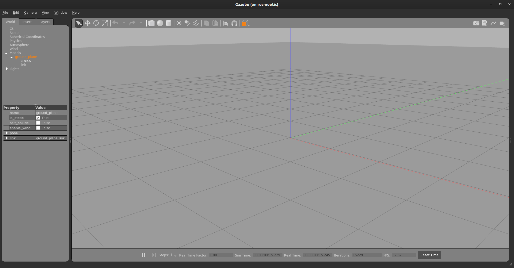
-
You can add primitive shapes like cube, sphere and sphere from upper toolbar.

-
You can also add some other models by going to
Inserton the left panel. Let’s try addingAmbulanceto the scene which is underhttp://models.gazebosim.org/. It can take some time to download and load.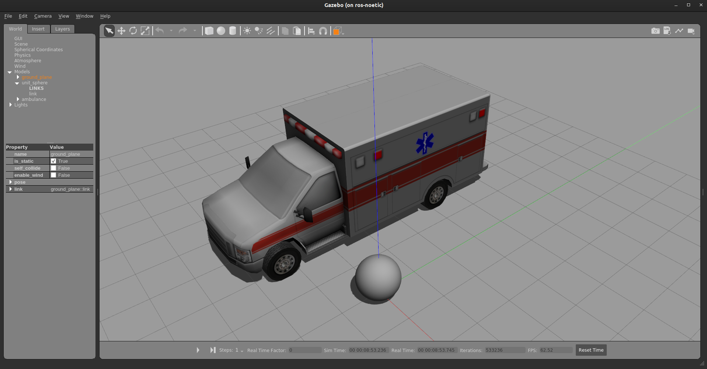
-
You can also add some other custom models saved on you hard disk by adding path.
Applying force/torque to a model
First, select sphere. Right-click on it and select apply force/torque. Fill in the details as shown below.
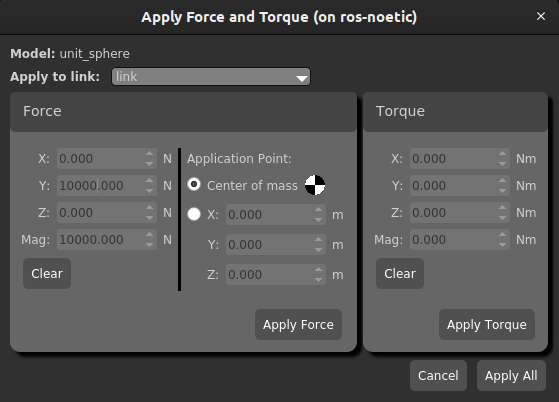
Note: Don’t forget to click on play button to start the simulation.
Now click on apply force. You can see the force being applied. Notice that the force is applied for 1ms, so we’ve provided such high force for such a small ball to increase the impulse.
RViz
-
RViz is short for
ROS Visualization. -
It is a 3D visualization software tool for robots, sensors, and algorithms.
-
It enables you to see the robot’s perception of its world (real or simulated).
-
The purpose of rviz is to enable you to visualize the state of a robot. It uses sensor data to try to create an accurate depiction of what is going on in the robot’s environment.
To launch rviz, type the following command in your terminal:
roscore
And in a different terminal tab, type:
rosrun rviz rviz
Here is the screen you should see when you launch rviz:
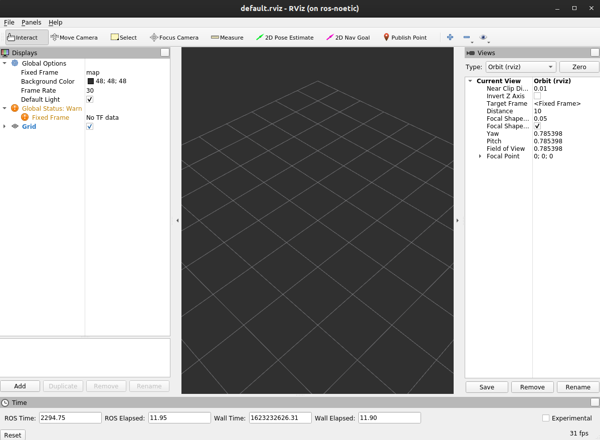
The left panel is the Displays panel. It has a list of plugins. These plugins enable you to view sensor data and robot state information. To add a plugin, you would click the Add button on the bottom left of the window.
Difference between RViz and Gazebo
The difference between the two can be summed up in the following excerpt from Morgan Quigley (one of the original developers of ROS) in his book Programming Robots with ROS:
“rviz shows you what the robot thinks is happening, while Gazebo shows you what is really happening.”
-
gazeboshows the simulated environment in which a robot is placed. -
rvizshows the same environment through the eyes of a robot with the help of sensors.
Note: To get more familiar with the RViz tool, check out the tutorial videos in this link.
ROS Exercises
- This section contains tasks based on
ROS Noetic. - Make sure you’ve configured
ROSandROS Workspaceproperly before proceeding further.
All the best!!!
Task on Turtlesim
Welcome to task on turtlesim!
The aim of this task is to make you familiar with
rostopicsandrosservices. You need to install the mentioned software & libraries by running the provided instructions in the provided sequence only; and if any error occurs at any step, please do not proceed unless the error has been rectified from your end.
Problem Statement
-
The objective of this task is to spawn a turtle in a turtlesim window and move it in a circle using ros nodes.
-
You can do this by creating a node name,
node_do_circlewith a python script,node_do_circle.py. -
Change the color of the pen of the turtle.
- turtle1
r: 255g: 255b: 0width: 5
You will need to use
rosservicesto do this part of the task. - turtle1
-
Change the background to forestgreen.
background_r: 34background_g: 139background_b: 34
You will need to use
rosparamto do this part of the task.
Procedure
- First, create a package name
pkg_move_turtle, within your catkin workspace. Once done, compile and source the packages.
cd ~/workspace
catkin_make
source devel/setup.bash
- Within this package, you should have a
scriptsfolder inside which you’ll create a python script, namednode_do_circle.py.
Note: Fill the script with proper programming ethics. Doing this will help us understand your code better and quicker than usual.
- After completing the python script. Make it executable, if it isn’t already. To do that, enter the following code.
chmod +x ~/workspace/src/pkg_move_turtle/scripts/node_do_circle.py
- Before executing make sure that
roscoreis running along withturtlesim_node. You can either run them in separate terminals or simply create amove_in_a_circle.launchfile inside the~/workspace/src/pkg_move_turtle/launch/folder. Launch file can run multiple nodes unlike a python/cpp script. Run the launch file, enter,
roslaunch pkg_move_turtle move_in_a_circle.launch
- This should run these processes in parallel.
- roscore
- turtlesim_node
- node_do_circle.py
Hints
- You can use linear velocity as well as angular velocity with some combination to get this done.
- Keep tracking the distance travelled so as to know when to stop.
Expected Output
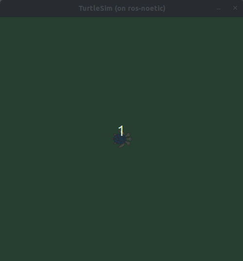
RQT Graph
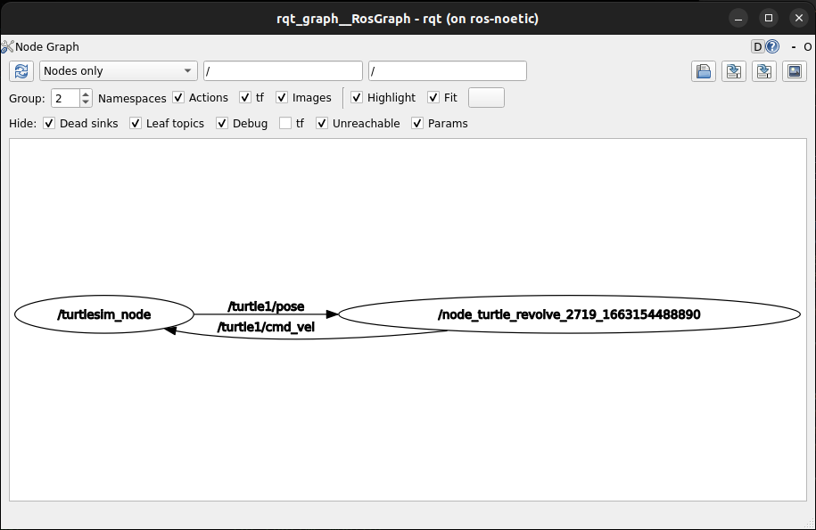